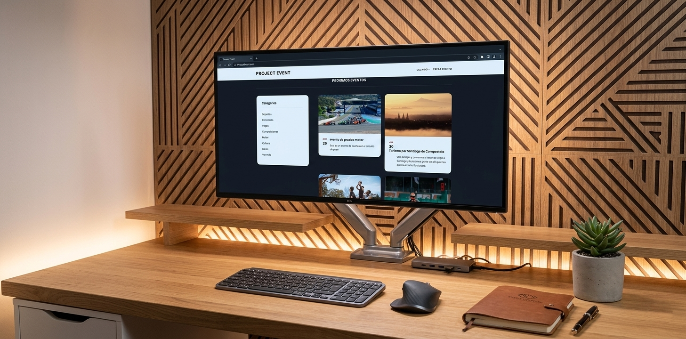

Project Event es una plataforma social orientada a eventos que combina lógica backend personalizada con una interfaz frontend dinámica, permitiendo la gestión completa de usuarios y eventos en tiempo real mediante una arquitectura web tradicional full-stack.

Interfaz desarrollada en HTML, CSS y JavaScript encargada de la presentación de datos y la interacción con el usuario.
Procesa las peticiones del cliente, aplica reglas de negocio y ejecuta consultas SQL directas sobre la base de datos MySQL. También gestiona la autenticación de usuarios y el control de sesiones.
Sistema de persistencia relacional donde se almacenan usuarios, eventos y relaciones entre entidades.
El sistema sigue un flujo cliente-servidor clásico: El usuario interactúa desde el frontend → el servidor PHP recibe la petición → se ejecutan consultas SQL en MySQL → el backend devuelve los datos procesados al cliente → el frontend renderiza la información.
El sistema se implementa mediante una arquitectura web tradicional basada en PHP y MySQL, donde la lógica de negocio se ejecuta en el servidor. Las operaciones principales se realizan mediante consultas SQL directas, procesadas en el backend en respuesta a acciones del usuario desde el frontend. El sistema incluye validación de datos en servidor, control de sesiones de usuario y gestión de permisos básicos para acceso a funcionalidades. Se utiliza un endpoint específico tipo API únicamente para la obtención de eventos asociados a usuarios, optimizando la carga de datos dinámicos en esa sección concreta.